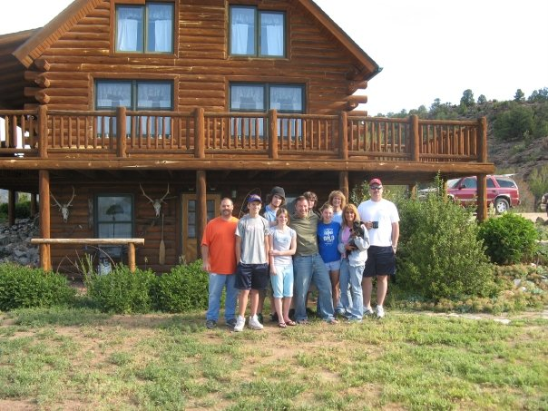
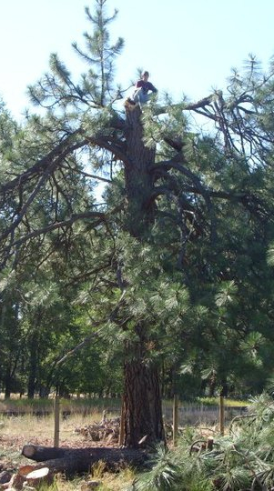
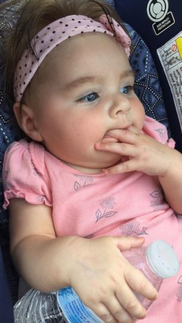

Kayla at her grandparents house near the mountains
Kayla was born in Kearney, NE at the Good Sam hospital at 12:23pm. Although she was born there she grew up in Lexington Nebraska. She lived the country life growing up and at age three her parents split up. Growing up with three dogs (Puddles, Pistol and Tonka) and two cats (Evil and Swiffer), she had lots of pets but Evil her cat was her favorite. She says when she was young she used to put Evil in a play stroller and wheel him around, and that she used to cuddle him every night at bedtime.

Sitting on top of a tree
Every summer they would go to her Grandparents house in Colorado near the mountains, where her entire family would meet. Kayla and her cousins would goof around and play on rocks near the house, and play around the river where there was a cliff they could jump off into the river. Her favorite thing she can remember of her young years was a huge hiking and camping trip to a remote lake upon a 14-thousand mile high mountain, it's safe to say she grew up an adventurer.
Teen
Winning first place 100-yard hurdles
In her middle years she enjoyed many friends and lots of sports, attending Overton, NE. She excelled at Track and Basketball. Track was her favorite, she competed in the 4x1 relay and various hurdle distances, where she won ribbons and medals and ranked top in her school. She would pick her best friend up in the morning and they would jam and sing to music on their way to school every morning. When there was time between after school and sports games Kayla would head over to her house and they would hang out killing time, and travel to the game together. While attending highschool she had a 3.2GPA and was in the honoroll, she knew she wanted to do something in the medical field.
Alex from Magic Mike stopping through for some food
Her first job was at Arby's where she met someone who she would unknowingly marry four years later.
Adult
Vacation in the mountains
She eventually became Assistant Manager and moved to Kearney where she was originally born, with her boyfriend. She started to attend college at CCC to become a nurse, and went to work at a veterans home, where her dreams started to become reality. She ended up marrying the love of her life in July of 2016, where she had a beautiful outdoor summer wedding. She went on to graduate Nursing School in May of 2019, she then moved to Lincoln, Nebraska with her husband to start her job as a Nurse treating mental health patients at Bryan West Medical Center.

Little miss Avery
Her child was born April 6, 2020 at Noon in Lincoln, Nebraska and she named her Avery, she quickly became an avid Husker fan. Through the years she has retained her love for the outdoors and hiking. Her goals for the future are traveling outside the country and buying a house where she can have a bigger family.